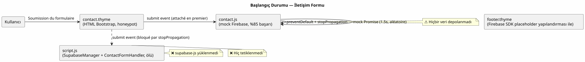
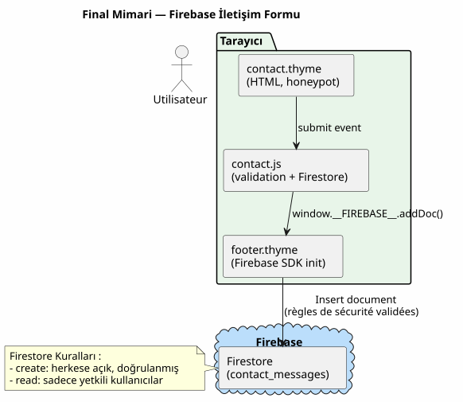

Supabase → Firebase Migrasyonu: Backend Olmadan İletişim Formunu Firestore'a Bağlamak
Yayınlandı: 29 April 2026
- Senaryo: hiçbir şeyi kaydetmeyen bir form
- Neden Supabase yerine Firebase?
- Aşama 1: Firebase projesini oluşturun
- Aşama 2: Gönderme JavaScript’ini yeniden yazmak
- Aşama 3: Ölü Supabase kodlarını temizleme
- Aşama 4: Alt bilgiyi (footer) yapılandırın
- Faz 5: Final mimari
- Bu migrasyonun dogfooding hakkında söyledikleri
- Sonraki adımlar (backlog)
- Referanslar
Aylarca, bu sitenin iletişim formu bir JavaScript mock üzerinde çalıştı — %85 başarı vaadi, sahte bir Firestore, depolanan sıfır veri. İlk plan, e-posta bildirimleri için Google Apps Script ile birlikte bir Supabase backend öngörüyordu. Terk edildi. Bugün, Firebase Firestore’a geçiş sürecini anlatıyorum: projenin oluşturulması, güvenlik kuralları, JS’nin yeniden yazılması, ölü Supabase kodlarının temizlenmesi. Ve bu seçimin, geliştirme felsefesi hakkında neden daha geniş bir şeyler söylediği.
- içindekiler
-
[]
Senaryo: hiçbir şeyi kaydetmeyen bir form
Bu site, Gradle eklentim olan JBake tarafından oluşturulmuştur`bakery`. %100 statiktir — backend yok, veri tabanı yok. Sadece bir iletişim formum var. Sayfa`contact.html`mevcut, HTML hazır (ad, e-posta, telefon, konu, mesaj alanları, HTML5 doğrulama, anti-spam honeypot), Bootstrap stilleri yerinde. Görsel olarak her şey mükemmel.
Ancak gönderim sırasında hiçbir şey olmuyor.
const firebaseMock = new Promise((resolve, reject) => {
setTimeout(() => {
if (Math.random() < 0.85) {
resolve({ status: 201, message: 'Message stored in Firestore.' });
} else {
reject({ status: 500, message: 'Firestore write failed.' });
}
}, 1500);
});Bir mock. Rol yapan bir promise. Kullanıcı bir spinner, ardından « Mesaj başarıyla gönderildi! » mesajı görür. Ancak veriler boşluğa gider. Hiçbir mesaj hiçbir yere kaydedilmez.
Durum bozuk bir formdan daha kötü — bu, yalan söyleyen bir form.
Supabase Mirası
…` içinde belgelenen başlangıç planı,content/draft/integration_formulaire_contact_supabase.adoc, öngörüyordu:
-
Tablo içeren bir Supabase veri tabanı`contacts`ve Satır Düzeyinde Güvenlik (Row Level Security)
-
Bir RPC`handle_contact_form`sunucu tarafı
-
Bir Google Apps Script webhook’unu çağıran bir SQL tetikleyicisi
-
Gmail bildirim e-postası gönderen Google Apps Script
İlgili JavaScript kodu hâlâ şurada mevcut:`script.js`. Bir sınıf var`SupabaseManager`global değişkenlerle bir Supabase istemcisi başlatan`SUPABASE_URL` et SUPABASE_KEY, ve bir sınıf`ContactFormHandler`formun gönderim (submit) olayını dinleyen ve çağıran`SupabaseManager.submitContactForm()`Lütfen çevrilecek metni sağlayın.
Sorun: bu global değişkenler artık footer’a enjekte edilmiyor. Le`<script src="supabase-js">`kaldırıldı. Kod çağırıyor`supabase.createClient()`bir değişken üzerinde`supabase`artık mevcut olmayan. Dolayısıyla:
console.error : 'Supabase client library (supabase-js) is not loaded.'Sadece veriler saklanmamakla kalmıyor, aynı zamanda gönderim kodu da çalışmıyor.
Hayalet çift gönderim
İşleri daha da kötüleştirmek için, birsessiz rekabetayn form üzerindeki iki handler arasında:
-
`contact.js`submit’i dinle, mock Firebase’i çağır
-
script.js— aracılığıyla`ContactFormHandler`— submit’i de dinle, çağır`SupabaseManager`
Her ikisi de`event.preventDefault() + event.stopPropagation(). Gibi`contact.js`ilk olarak şuna yüklenir`footer.thyme, onun handler’ı önce bağlanır. Yayılmayı engeller.`ContactFormHandler`asla tetiklenmeyecek.
Bu aktif bir hata bile değil — bu bir zombi. Hiçbir zaman çalışma fırsatı bulmayan bir kod.

Neden Supabase yerine Firebase?
Migrasyon kararı şurada belgelenmiştir`AGENT.adoc`Lütfen çevrilecek metni sağlayın.
Firebase artık şu nedenlerle tercih edilmektedir: daha iyi ücretsiz plan, yerel Firestore, entegre Cloud Functions, daha uygun Google ekosistemi. Mevcut Supabase uygulaması « ⚠️ Abandonné » olarak işaretlenmiştir.
Ücretsiz planın ötesinde, mimari bir neden var. Bu site Google ekosisteminde yaşıyor: hedef depo`cheroliv.github.io`, CNAME GitHub Pages’a yönlendiriyor, Gradle build’i JGit aracılığıyla GitHub’a push’luyor. Üçüncü taraf bir servis (Supabase) yerine bir Google servisi (Firebase) eklemek, dağılım yüzeyini azaltır.
Yerel moddaki Firestore (Datastore modunda değil), aklımdaki NoSQL doküman zihniyetine de daha yakındır: koleksiyonlar, dokümanlar, tiplendirilmiş alanlar, sunucu zaman damgaları ve yerleşik güvenlik kuralları.
Aşama 1: Firebase projesini oluşturun
Başlatma
Firebase CLI makinemde yüklü olmadığı için web konsolu üzerinden ilerliyorum:
-
Githttps://console.firebase.google.com/[Firebase Konsolu]
-
Proje oluştur`cheroliv-contact`(veya mevcut bir projeyi yeniden kullanın)
-
Firestore’u yerel modda etkinleştirin (Datastore değil)
-
Bölgesel bir veri tabanı oluşturun`eur3`(Avrupa)
Bizimki gibi minimalist bir kullanım için (tek bir koleksiyon, genel yazma erişimi), yerel mod doğru seçimdir. Karmaşık Datastore kurallarına gerek yok.
Firestore güvenlik kuralları
Form düzeni halka açıktır — herkes mesaj gönderebilir. Ancak kötüye kullanımları sınırlamak istiyorum:
rules_version = '2';
service cloud.firestore {
match /databases/{database}/documents {
match /contact_messages/{messageId} {
// Lecture : admin uniquement (authentifié)
allow read: if request.auth != null;
// Écriture : publique, mais limitée
allow create: if request.auth == null
&& request.resource.data.name is string
&& request.resource.data.name.size() >= 1
&& request.resource.data.name.size() <= 100
&& request.resource.data.email is string
&& request.resource.data.email.matches('.*@.*\\..*')
&& request.resource.data.email.size() <= 254
&& request.resource.data.subject is string
&& request.resource.data.subject.size() >= 3
&& request.resource.data.subject.size() <= 200
&& request.resource.data.message is string
&& request.resource.data.message.size() >= 10
&& request.resource.data.message.size() <= 5000
&& request.resource.data.created_at == request.time
&& request.resource.data.user_agent is string
&& request.resource.data.user_agent.size() <= 500;
}
}
}Kilit noktalar:
-
allow read— yalnızca kimliği doğrulanmış kullanıcılar mesajları okuyabilir (ben, Firebase konsolu üzerinden) -
allow create— herhangi biri belge oluşturabilir, ancak alan doğrulaması ile -
Sunucu tarafı doğrulama: min/max boyutlar, e-posta formatı,
created_at`şuna uygun olmalıdır`request.time(sahtecilik karşıtı) -
`user_agent`izlenebilirlik için gönderilir (kritik değil ancak faydalı)
Bu kurallar basit bir …'den daha katıdır`allow write: if true;`Bunlar, bir saldırganın devasa payload’lar veya hatalı biçimlendirilmiş alanlar enjekte etmesini engeller.
Aşama 2: Gönderme JavaScript’ini yeniden yazmak
Sözleşme basit:
-
Form verilerini oku
-
Honeypot’u kontrol et (alan`hp_name`— eğer doldurulmuşsa bu bir bottur, hiçbir şey göndermeden başarı simüle edilir)
-
Aramak`addDoc(window.FIREBASE.collection(db, "contact_messages"), {…})`
-
Başarıyı veya hatayı göster
window.FIREBASE` bağımlılığı
İçinde`footer.thyme`, bir modül betiği Firebase SDK’sını başlatır ve küresel bir nesne sunar:
<script type="module">
import { initializeApp } from "https://www.gstatic.com/firebasejs/11.6.0/firebase-app.js";
import { getFirestore, collection, addDoc, serverTimestamp }
from "https://www.gstatic.com/firebasejs/11.6.0/firebase-firestore.js";
const firebaseConfig = { /* valeurs réelles */ };
const app = initializeApp(firebaseConfig);
const db = getFirestore(app);
window.__FIREBASE__ = { db, collection, addDoc, serverTimestamp };
</script>Modül scriptleri şundan önce çalışır`DOMContentLoaded`, bu yüzden`window.FIREBASE`garanti edilmiştir, handler … olduğunda`contact.js`tetikleniyor. Önlem olarak, CDN’in yavaş olma ihtimaline karşı yine de 5 saniyelik bir polling ekliyorum.
Yeni `contact.js
document.addEventListener('DOMContentLoaded', function () {
'use strict';
const form = document.getElementById('contact-form');
if (!form) return;
const submitButton = form.querySelector('button[type="submit"]');
const successMessage = document.getElementById('contact-success-message');
const errorMessage = document.getElementById('contact-error-message');
// Éléments de validation
const nameInput = form.querySelector('input[name="name"]');
const emailInput = form.querySelector('input[name="email"]');
const phoneInput = form.querySelector('input[name="phone"]');
const subjectInput = form.querySelector('input[name="subject"]');
const messageInput = form.querySelector('textarea[name="message"]');
const honeypotInput = form.querySelector('input[name="hp_name"]');
/**
* Attend que window.__FIREBASE__ soit disponible.
* Timeout de 5 secondes — si le CDN Firebase est lent, on abandonne.
*/
function waitForFirebase(timeoutMs = 5000) {
return new Promise((resolve, reject) => {
if (window.__FIREBASE__) {
resolve(window.__FIREBASE__);
return;
}
const start = Date.now();
const interval = setInterval(() => {
if (window.__FIREBASE__) {
clearInterval(interval);
resolve(window.__FIREBASE__);
} else if (Date.now() - start > timeoutMs) {
clearInterval(interval);
reject(new Error('Firebase SDK non disponible après timeout'));
}
}, 100);
});
}
// --- Validation (identique à l'existant) ---
function validateForm() {
nameInput.setCustomValidity('');
emailInput.setCustomValidity('');
if (phoneInput) phoneInput.setCustomValidity('');
subjectInput.setCustomValidity('');
messageInput.setCustomValidity('');
if (nameInput.value.trim().length < 1) {
nameInput.setCustomValidity('Veuillez saisir votre nom.');
}
const emailPattern = /^[^\s@]+@[^\s@]+\.[^\s@]+$/;
if (!emailPattern.test(emailInput.value.trim())) {
emailInput.setCustomValidity('Veuillez saisir une adresse email valide.');
}
if (phoneInput && phoneInput.value.trim() !== '') {
const phonePattern = /^\d{10,15}$/;
if (!phonePattern.test(phoneInput.value.trim())) {
phoneInput.setCustomValidity('Veuillez saisir un numéro valide (10 à 15 chiffres).');
}
}
if (subjectInput.value.trim().length < 3) {
subjectInput.setCustomValidity('Veuillez saisir un sujet (3 caractères minimum).');
}
if (messageInput.value.trim().length < 10) {
messageInput.setCustomValidity('Veuillez saisir un message (10 caractères minimum).');
}
form.classList.add('was-validated');
return form.checkValidity();
}
// --- Handler de soumission ---
form.addEventListener('submit', async function (event) {
event.preventDefault();
event.stopPropagation();
if (!validateForm()) return;
// Honeypot : si rempli, simuler un succès sans rien envoyer
if (honeypotInput && honeypotInput.value.trim() !== '') {
successMessage.style.display = 'block';
form.reset();
form.classList.remove('was-validated');
return;
}
// UI : état d'envoi
submitButton.disabled = true;
submitButton.innerHTML = `
<span class="spinner-border spinner-border-sm" role="status" aria-hidden="true"></span>
Envoi en cours...
`;
successMessage.style.display = 'none';
errorMessage.style.display = 'none';
try {
const fb = await waitForFirebase();
const messagesCollection = fb.collection(fb.db, 'contact_messages');
await fb.addDoc(messagesCollection, {
name: nameInput.value.trim(),
email: emailInput.value.trim(),
phone: phoneInput ? phoneInput.value.trim() : '',
subject: subjectInput.value.trim(),
message: messageInput.value.trim(),
created_at: fb.serverTimestamp(),
user_agent: navigator.userAgent.substring(0, 500)
});
successMessage.style.display = 'block';
form.reset();
form.classList.remove('was-validated');
} catch (error) {
console.error('Erreur Firestore:', error);
errorMessage.style.display = 'block';
} finally {
submitButton.disabled = false;
submitButton.innerHTML = `
<i class="bi bi-send me-2"></i>
Envoyer le Message
`;
}
}, false);
});Mock’a göre değişiklikler:
-
waitForFirebase()— zaman aşımına sahip polling, CDN yavaş olsa bile dayanıklı -
honeypot— gizli alan eğer`hp_name`doldurulduğunda, Firestore çağrısı yapmadan bir başarı simüle et. Bot başarılı olduğunu sanır ancak hiçbir şey kaydedilmez -
addDoc(collection, {…})— gerçek Firestore çağrısı ile`serverTimestamp()` etuser_agent -
… ile hata yönetimi`try/catch`asenkron
-
Temizleme:`finally`(butonun geri yüklenmesi)
|
Neden`user_agent`? Opsiyoneldir ancak tanı koymak için faydalıdır. Garip bir mesaj geldiğinde, bunun masaüstü bir tarayıcıdan mı, mobilden mi yoksa bir curl betiğinden mi geldiğini bilmek ayıklamaya yardımcı olur. |
Aşama 3: Ölü Supabase kodlarını temizleme
`script.js`250 satır ölü kod (dead code) içeriyor:
-
SupabaseManager(satırlar 417-481) — 65 satır -
ContactFormHandler(satırlar 490-551) — 62 satır -
Başlatma bloğu (satırlar 645-654) — 10 satır
Toplam: Silinecek ~140 satır.
Blok`DOMContentLoaded`bir oluşturun`SupabaseManager`sonra bir`ContactFormHandler`forma bağlı. Yukarıda açıklandığı gibi, bu kod hiçbir zaman çalışmaz (şununla engellenir:`contact.js`), ve çalıştırılsa bile başarısız olurdu (Supabase SDK’sı yüklü değil).
Siliyorum:
-
Sınıf`SupabaseManager`
-
Sınıf`ContactFormHandler`
-
initialization` bloğu şurada`DOMContentLoaded`(645-654. satırlar)
Le reste de script.js`bozulmamıştır:`ThemeManager, ScrollToTopButton, MobileMenuManager, SmoothScrollWithOffset, NavbarHeightUpdater, DynamicNavbarBreakpoint, CodeBlockManager, TooltipManager, `PhoneInputManager`Lütfen çevrilecek metni sağlayın.
Aşama 4: Alt bilgiyi (footer) yapılandırın
`footer.thyme`zaten Firebase boilerplate’ine sahip ancak yer tutucu değerlerle. Şunları değiştiriyorum:
const firebaseConfig = {
apiKey: "REMPLACER_PAR_VOTRE_API_KEY",
authDomain: "REMPLACER_PAR_VOTRE_AUTH_DOMAIN",
projectId: "REMPLACER_PAR_VOTRE_PROJECT_ID",
storageBucket: "REMPLACER_PAR_VOTRE_STORAGE_BUCKET",
messagingSenderId: "REMPLACER_PAR_VOTRE_SENDER_ID",
appId: "REMPLACER_PAR_VOTRE_APP_ID"
};şuradan alınan gerçek değerler aracılığıylaProje Ayarları > Genel > Uygulamalarınız > Web uygulamasıFirebase konsolunda.
Değerler hassastır (apiKey`Firebase’de tasarım gereği herkese açıktır, ancak bunları açık metin olarak commitlememeyi tercih ediyorum). Bunları şurada saklıyorum:`site.yml(zaten … içinde`.gitignore`) ve eklenti`bakery`bunları build tarafına eklenecek bir mantık aracılığıyla şablona enjekte eder.
Şu an için onları doğrudan şuraya koyuyorum`footer.thyme`— build işlemi`./gradlew serve`yerel olarak yükleyecektir. Dağıtım sırasında, enjeksiyonu şuna taşıyacağım`site.yml`veya bir Gradle değişkenine.
|
L'`apiKey`Firebase değildirdeğilbir sır değildir. Tasarımı gereği kamuya açıktır. Verilerinizi koruyan şey, şunlardır:Firestore güvenlik kuralları, API anahtarını değil. Onu bir`.env`sunucu tarafında yüklendi — tarayıcıya sunulması amaçlanmıştır. |
Faz 5: Final mimari

Bu migrasyonun dogfooding hakkında söyledikleri
Bu site, kendi Gradle eklentim tarafından oluşturulmuştur`bakery`. İletişim formu sitenin içinde yer alıyor. Supabase → Firebase geçişi şurada belgelenmiştir:`AGENT.adoc`, backlog’da tartışılır, şunun üzerinden test edilir`./gradlew serve`, ve bir blog yazısı (şu an okuduğunuz yazı) oluşturur.
Bu tamamen bir dogfooding örneği. Site, eklentinin ürünü; eklenti, geliştiricinin ürünü; geliştirici ise süreci sitenin kendisinde belgeliyor.
Çember tamamlandı.
Aylarca bir mock ile uğraşmak (formun sessizce yalan söylediği koca oturumlar), bana bir şeyi fark ettirdi: kişisel bir statik sitenin backlog’u asla "bitmez". Her zaman öncelikli bir US, her zaman taslakta bir yazı, her zaman bir template içinde yorum satırına alınmış bir bölüm vardır. Disiplin, her şeyi bitirmek değil; kullanıcının gördüğü şeyi bitirmektir.
Bozuk bir iletişim formu, hiç form olmamasından daha kötüdür. Bu, tutulmamış bir sözdür.
Değişikliklerin özeti
Dosya |
Değişiklik |
Etki |
|
Makale oluşturma |
Dokümantasyon |
|
Yeniden yazım (mock → gerçek Firestore) |
İşlevsel |
|
SupabaseManager + ContactFormHandler + init bloc kaldırıldı |
Temizlik |
|
Konfigürasyon yer tutucu (placeholder) → gerçek değerler değişimi |
Yapılandırma |
Sonraki adımlar (backlog)
-
Bildirim e-postası: Bir Cloud Function`onCreate`üzerinde`contact_messages`SendGrid üzerinden e-posta gönderen. Form kayıt yapıyor ancak bildirim almıyorum. Orta öncelik — mesajlar Firebase konsolunda görünüyor.
-
İstemci tarafında hız sınırlama: Ardışık çoklu gönderimleri önlemek için bir localStorage zaman damgası (timestamp) ekleyin. Honeypot basit botları engeller, bir hız sınırlayıcı (rate limiter) ise biraz daha gelişmiş botları engeller.
-
Testler: Formuyla gönderen ve belgenin Firestore’da göründüğünü doğrulayan bir Playwright testi. Şimdilik, manuel olarak şunun üzerinden test ediyorum`./gradlew serve`Lütfen çevrilecek metni sağlayın.